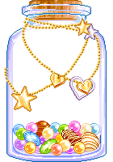

My Media Log 
You can also follow me on these tracker sites: letterboxd (movies), tvtime (tv shows), serializd (tv shows), anilist (anime), goodreads (books), last.fm (music), backloggd (games)
Full Log
Here's my full media log! It contains pretty much everything I've watched, played, read, and listened to since August 2018! Updated sporadically.
Total entries: loading... (not unique)
Filter:
— december
- ∷ stranger things (s5)
- ∷ what we do in the shadows ↺
- ⋆ eddie the eagle ↺
- ❝ animal farm ↺
- ⧖ wir hören uns alle gegenseitig
- ϟ balatro
— november
- ∷ stranger things (s5)
- ∷ what we do in the shadows ↺
- ⋆ now you see me, now you don't ﾐ
- ⋆ wicked 2 ﾐ
- ❝ how we got to know: six innovations that made the modern world
- ϟ balatro
— october
- ∷ what we do in the shadows ↺
- ⋆ 28 days later
- ⋆ companion
- ⋆ hokus pokus
- ⋆ m3gan 2.0
- ⋆ scary movie ↺
- ⋆ scream 2
- ⋆ silent hill
- ⋆ the amityville horror
- ⋆ the craft
- ⋆ the lost boys
- ⋆ the sixth sense
- ⋆ the substance
- ⋆ us
- ▫ buzzfeed unsolved: true crime ↺
- ▫ watcher's mystery files
- ϟ balatro
— september
- ∷ stranger things ↺
- ⋆ a nice indian boy
- ⋆ certain women
- ⋆ legally blonde ↺ ﾐ
- ⋆ thelma & lousie ﾐ
- ⋆ wall-e ↺ ﾐ
- ▫ danny gonzalez ↺
- ❝ cbt for dummies ↺
- ❝ midnight sun
- ๑ breach - twenty one pilots
- ϟ gosupermodel
- ϟ mario kart
— august
- ∷ stranger things ↺
- ∷ wednesday (s2)
- ⋆ das kanu des manitu ﾐ
- ⋆ snow white
- ⋆ the adam project
- ▫ good mythical morning (s5-6) (↺)
- ❝ wir kinder vom bahnhof zoo
- ❝ watership down ↺
- ϟ date everything
- ϟ gosupermodel
— july
- ⋆ jurassic world: rebirth ﾐ
- ⋆ star wars episode ix: the rise of skywalker
- ⋆ dinosaur
- ⋆ freaky friday (1976)
- ⋆ kpop demon hunters
- ⋆ rogue one: a star wars story
- ⋆ solo: a star wars story
- ▫ good mythical morning (s0-5) (↺)
- ๑ rhett and link
- ϟ pokémon legends: arceus
— june
- ∷ doctor who (s2)
- ∷ abbott elementary (s4)
- ∷ monster high (2022)
- ⋆ star wars episode iv: a new hope
- ⋆ star wars episode v: the empire strikes back
- ⋆ star wars episode vi: the return of the jedi
- ⋆ star wars episode i: the phantom menace
- ⋆ star wars episode ii: attack of the clones
- ⋆ star wars episode iii: revenge of the sith
- ⋆ star wars episode vii: the force awakens
- ⋆ star wars episode viii: the last jedi
- ❝ paranormality: why we see what isn't there, richard wiseman
- ϟ minecraft
— may
- ∷ severance (s1-2)
- ∷ the last of us (s2)
- ∷ abbott elementary (s4)
- ⋆ 10 things i hate about you ↺
- ⋆ a real pain
- ⋆ thunderbolts* ﾐ
- ❝ polysecure, jessica fern
- ❝ homo deus, yuval noah harari
- ϟ minecraft
— april
- ∷ jurassic world: chaos theory (s3)
- ∷ you (s5)
- ∷ cunk on earth
- ∷ the last of us (s2)
- ⋆ dracula: dead and loving it
- ⋆ ferris bueller's day off
- ⋆ to all the boys i've loved before
- ⋆ to all the boys: always and forever
- ⋆ to all the boys: p.s. i still love you
- ❝ a curious history of sex, kate lister
- ❝ come as you are, emily nagoski
- ❝ the charisma myth, olivia fox cabane
- ϟ minecraft
— march
- ∷ lost (s2-3)
- ⋆ alex strangelove
- ⋆ detective pikachu ↺
- ⋆ joy
- ⋆ mickey 17 ﾐ
- ⋆ scoop
- ⋆ the girl next door
- ▫ kam sandwich
- ❝ cloud atlas, david mitchell
- ❝ six of crows, leigh bardugo
- ❝ the bell jar, slyvia plath
- ๑ alte bekannte
- ϟ hello kitty island adventure
- ϟ legend of zelda: tears of the kingdom
- ϟ plants vs zombies
— february
- ∷ lost (s1-2)
- ∷ squid game (s2)
- ❝ six of crows, leigh bardugo
- ϟ viewfinder
- ϟ hello kitty island adventure
- ϟ roblox: dress to impress
— january
- ∷ jurassic world: chaos theory
- ∷ ratched
- ∷ squid game (s2)
- ∷ abbott elementary (s1-3)
- ⋆ nosferatu ﾐ
- ❝ my secret garden, nancy friday
- ϟ subnautica
— december
- ∷ jurassic world camp cretaceous (s3-5)
- ∷ what we do in the shadows (s6)
- ⋆ let it snow
- ⋆ red one
- ⋆ wicked ﾐ
- ❝ want, gillian anderson
- ❝ breaking dawn, stephenie meyer
- ϟ bowser's fury
- ϟ home safety hotline
- ϟ pocket mini golf
- ϟ tomodachi life
— november
- ∷ agatha all along
- ∷ derry girls
- ∷ jurassic world camp cretaceous (s1-2)
- ∷ what we do in the shadows (s6)
- ∷ cowboy bebop (2ep)
- ∷ fallout (1ep)
- ⋆ moana 2 ﾐ
- ⋆ summer qamp
- ❝ eclipse, stephenie meyer
- ❝ new moon, stephenie meyer
- ❝ breaking dawn, stephenie meyer
- ϟ i'm on observation duty
- ϟ super mario 3d world
- ϟ vvvvvv
— october
- ∷ hazbin hotel
- ∷ heartstopper (s3)
- ∷ what we do in the shadows (s6)
- ∷ x-men: the animated series (s3)
- ⋆ it ↺
- ⋆ an american werewolf in london
- ⋆ barbarian
- ⋆ bodies bodies bodies
- ⋆ bones and all
- ⋆ e.t. the extra-terrestrial ↺
- ⋆ it follows
- ⋆ it: chapter 2 ↺
- ⋆ m3gan
- ⋆ no one will save you
- ⋆ perfect blue
- ⋆ ringu
- ⋆ scream ↺
- ⋆ signs
- ⋆ speak no evil ﾐ
- ⋆ the blair witch project (↺)
- ▫ watcher: mystery files
- ❝ twilight, stephenie meyer (↺)
- ❝ new moon, stephenie meyer
- ❝ the complete maus, art spiegelman
- ϟ huniecam studio ↺
— september
- ∷ hazbin hotel
- ∷ x-men '97
- ∷ x-men: the animated series (s1-2)
- ∷ legion (1ep)
- ⋆ adventureland
- ⋆ bambi (↺)
- ⋆ beetlejuice beetlejuice ﾐ
- ⋆ dark phoenix
- ⋆ next goal wins
- ⋆ the fox and the hound (↺)
- ⋆ the proposal
- ⋆ year one ↺
- ⋆ you don't mess with the zohan
- ♡ cherik (charles xavier & erik lehnsherr)
- ♡ deadpool/wolverine ('poolverine')
- ❝ the code book, simon singh
- ❝ the secret history, donna tartt
- ❝ lots of x-men comics ♡
- ❝ the haunting of hill house, shirley jackson
— august
- ⋆ deadpool & wolverine (2x) ﾐ
- ⋆ 13 going on 30 ↺
- ⋆ bad education
- ⋆ eddie the eagle
- ⋆ kate & leopold
- ⋆ mamma mia! here we go again
- ⋆ saltburn
- ⋆ someone like you...
- ⋆ the fountain
- ⋆ the greatest showman ↺
- ⋆ the son
- ⋆ the wolverine
- ⋆ wild child
- ⋆ x-men: apocalypse
- ⋆ x-men: days of future past
- ⋆ x-men: first class
- ▫ game grumps: danganronpa 3
- ▫ sam o'nella academy ↺
- ♡ deadpool/wolverine ('poolverine')
- ❝ cannibalism: a perfectly natural history, bill schutt
- ❝ moby-dick or, the whale, herman melville
- ❝ the secret history, donna tartt
- ❝ warrior cats 6, erin hunter ↺
- ๑ barenaked ladies
- ๑ taylor swift
— july
- ∷ bridgerton, s3
- ∷ crashing (2x)
- ∷ ripley
- ∷ avatar: the last airbender, s2 ↺
- ∷ house m.d., s7-8
- ⋆ deadpool ↺
- ⋆ deadpool 2 ↺
- ⋆ isn't it romantic?
- ⋆ logan
- ⋆ love lies bleeding ﾐ
- ⋆ x-men
- ⋆ x-men 2
- ⋆ x-men 3
- ⋆ x-men origins: wolverine
- ♡ sam and fred (crashing)
- ❝ cannibalism: a perfectly natural history, bill schutt
- ❝ tales from watership down
- ❝ warrior cats 1 ↺
- ❝ warrior cats 2 ↺
- ❝ warrior cats 3 ↺
- ❝ warrior cats 4 ↺
- ❝ warrior cats 5 ↺
- ϟ neko atsume ↺
- ϟ skyrim ↺
— june
- ∷ house m.d., s5-7
- ∷ doctor who (s14)
- ⋆ inside out 2 ﾐ
- ⋆ the truman show ↺
- ▫ jan misali / how many super mario games are there now?
- ϟ minecraft ↺
- ϟ skyrim ↺
- ϟ breath of the wild ↺
— may
- ∷ house m.d., s2-4
- ∷ doctor who (s14)
- ⋆ inside job
- ⋆ kingdom of the planet of the apes ﾐ
- ⋆ vertigo
- ⋆ war horse
- ▫ good game (youtube red series) ↺
- ❝ cannibalism: a perfectly natural history, bill schutt
- ๑ clancy (twenty one pilots)
- ϟ stardew valley ↺
- ϟ minecraft ↺
— april
- ∷ house m.d., s1
- ∷ 3 body problem
- ∷ des
- ∷ inside man
- ⋆ anatomy of a fall
- ⋆ coco
- ⋆ damsel
- ❝ cannibalism: a perfectly natural history, bill schutt
- ❝ the house in the cerulean sea, t.j. klune
- ๑ dan avidan
- ๑ twrp
- ϟ stardew valley ↺
— march
- ∷ 3 body problem
- ∷ succession, s3-4
- ∷ the good place, s1-4
- ∷ doctor who, s8↺
- ∷ loki, s2
- ∷ tidying up with marie kondo
- ⋆ 22 jump street
- ⋆ good morning, vietnam
- ⋆ scott pilgrim vs. the world ↺
- ⋆ up ↺
- ⋆ weird: the al yankovic story
- ▫ jenny nicholson
- ♡ egobang (game grumps)
- ♡ roman & gerri (succession)
- ❝ goodbye, things, furnio sasaki
- ❝ the house in the cerulean sea, t.j. klune
- ❝ the metamorphosis, franz kafka
- ❝ the picture of dorian gray, oscar wilde
- ๑ twenty one pilots
- ϟ legend of zelda: breath of the wild (+dlc)
- ϟ super mario bros. wonder
— february
- ∷ doctor who, s8↺
- ∷ fleabag, s2↺
- ∷ succession, s2-3
- ∷ loki, s2
- ∷ orphan black, s1↺
- ⋆ (the brothers) grimsby
- ⋆ 21 jump street
- ⋆ all of us strangers ﾐ
- ⋆ bride wars
- ⋆ clueless ↺
- ⋆ extremely wicked, shockingly evil and vile
- ⋆ finding nemo ↺
- ⋆ friends with benefits ↺
- ⋆ now you see me ↺
- ⋆ the suicide squad
- ⋆ three billboards outside ebbing, missouri
- ⋆ yesterday
- ♡ twelfth doctor & clara (doctor who)
- ❝ aristotle and dante discover the secrets of the universe, benjamin alire sáenz
- ❝ the picture of dorian gray, oscar wilde
- ϟ die große schatzsuche (i spy: treasure hunt)
- ϟ kirby's dream course (SNES) ↺
- ϟ legend of zelda: breath of the wild ↺
- ϟ super mario bros. 2 (NES)
- ϟ super mario bros. 3 (NES)
- ϟ super mario bros. wonder
- ϟ the legend of zelda: link's awakening (GB)
— january
- ∷ doctor who, s14 +s7↺
- ∷ fleabag, all+s1↺
- ∷ succession, s1-2
- ∷ brooklyn nine-nine, s8
- ∷ masters of sex, s4
- ∷ orphan black, s1
- ∷ spongebob schwammkopf
- ∷ watership down
- ⋆ bad moms
- ⋆ bridge to terabithia ↺
- ⋆ the lost city
- ⋆ zombieland ↺
- ⋆ zombieland 2: double tap
- ♡ eleventh doctor & clara
- ♡ fleabag & the hot priest
- ❝ aristotle and dante discover the secrets of the universe, benjamin alire sáenz
- ❝ homo deus, yuval noah harari
- ❝ the princess bride, william goldman
- ϟ papers, please
- ϟ puyo puyo tetris
↪ 2023 | diary | media | resolutions | to do
- ᴋᴇʏ
— jan.
- ∷ doctor who ↺
- ∷ downton abbey
- ⋆ downton abbey: a new era
- ⋆ knives out
- ⋆ avatar
- ⋆ avatar 2 ﾐ
- ⋆ casablanca
- ⋆ downton abbey
- ⋆ guillermo del toro's pinocchio
- ⋆ knives out 2: glass onion
- ⋆ my sister's keeper
- ⋆ puss in boots
- ⋆ puss in boots 2: the last wish
- ⋆ singing in the rain
- ⋆ the girl with the dragon tattoo
- ⋆ the man from u.n.c.l.e.
- ❝ lolita, vladimir nabokov (↺)
- ๑ 50s music
- ϟ legend of zelda: breath of the wild ↺
- ϟ tetris 99
— feb.
- ∷ doctor who ↺
- ∷ you (s4.1)
- ∷ dance academy ↺
- ⋆ 2001: a space odyssey
- ⋆ black beauty
- ⋆ christopher robin
- ⋆ diary of a wimpy kid 1
- ⋆ diary of a wimpy kid 2
- ⋆ diary of a wimpy kid 3
- ⋆ knives out ↺
- ⋆ mona lisa smile
- ⋆ ratatouille ↺
- ⋆ split
- ⋆ when you finish saving the world
- ❝ sapiens, yuval noah harari (↺)
- ϟ legend of zelda: breath of the wild ↺
- ϟ minecraft
— mar.
- ∷ doctor who ↺
- ∷ what we do in the shadows
- ∷ you (s4.2)
- ⋆ 12 years a slave
- ⋆ downton abbey: a new era ↺
- ⋆ footloose
- ⋆ glass onion ↺
- ⋆ little miss sunshine
- ⋆ looper
- ⋆ okja
- ⋆ pretty woman
- ⋆ prisoners
- ⋆ ruby sparks
- ⋆ swiss army man ↺
- ⋆ tenet
- ⋆ the batman
- ⋆ the extra man
- ⋆ the good heart
- ⋆ the incredibles
- ⋆ the wonder
- ⋆ there will be blood
- ▫ squid craft (~12hrs)
- ❝ the rise and fall of the dinosaurs, stephen brusatte
- ❝ the scarlet letter, nathanial hawthorne
- ϟ board/card games (on switch)
- ϟ minecraft
— apr.
- ∷ the last of us
- ∷ what we do in the shadows
- ∷ doctor who ↺
- ⋆ alice in wonderland
- ⋆ badlands
- ⋆ blackkklansman
- ⋆ cocaine bear
- ⋆ dead poets society (↺)
- ⋆ easy a (↺)
- ⋆ eat, pray, love
- ⋆ fantastic mr. fox
- ⋆ hitchhiker's guide to the galaxy ↺
- ⋆ little miss sunshine ↺
- ⋆ miss congeniality
- ⋆ seberg
- ⋆ taxi driver
- ⋆ the hangover ↺
- ⋆ the lord of the rings 1
- ⋆ the royal tenenbaums
- ⋆ weekend at bernie's
- ▫ good mythical morning
- ❝ beloved, toni morrison
- ❝ the awakening, kate chopin
- ⧖ ear biscuits
- ϟ mario kart
- ϟ board/card games (on switch), hanafuda
- ϟ sims 4
— may
- ∷ what we do in the shadows (+↺)
- ⋆ 65
- ⋆ an evening with beverly luff linn
- ⋆ black swan
- ⋆ dawn of the planet of the apes
- ⋆ eagle vs shark
- ⋆ gentlemen broncos
- ⋆ get smart
- ⋆ ghost in the shell
- ⋆ heathers
- ⋆ i used to go here
- ⋆ into the wild
- ⋆ monsters university
- ⋆ moon
- ⋆ patrick
- ⋆ people, places, things (2x)
- ⋆ rango
- ⋆ rise of the planet of the apes
- ⋆ the super mario bros. movie ﾐ
- ⋆ the whale
- ⋆ war for the planet of the apes
- ⋆ whiplash
- ▫ eurovision 2023
- ▫ good mythical morning
- ❝ beloved, toni morrison
- ❝ the rise and fall of the dinosaurs, stephen brusatte
- ๑ flight of the conchords / jemaine clement ↺
- ϟ mario kart
- ϟ sims 4
— june
- ∷ broadchurch ↺
- ∷ good omens ↺
- ∷ prehistoric planet (↺)
- ∷ what we do in the shadows ↺
- ∷ x files (↺)
- ⋆ a quiet place
- ⋆ are you there god? it's me, margaret.
- ⋆ booksmart
- ⋆ crazy, stupid, love ↺
- ⋆ dinner for schmucks
- ⋆ don verdean
- ⋆ humor me
- ⋆ la la land
- ⋆ lost in translation
- ⋆ spider-man: into the spiderverse ↺
- ⋆ still alice
- ⋆ superbad
- ❝ angels in america, tony kushner
- ❝ dinosaurs: a concise natural history, david e. fastovsky
- ❝ the rise and fall of the dinosaurs, stephen brusatte
- ๑ flight of the conchords / jemaine clement ↺
- ϟ legend of zelda: breath of the wild ↺
— july
- ∷ avatar: the last airbender ↺
- ∷ broadchurch ↺
- ∷ silo
- ∷ what we do in the shadows (s5)
- ⋆ barbie ﾐ
- ⋆ don't make me go
- ⋆ ice age ↺
- ⋆ ice age 2 ↺
- ⋆ men in black
- ⋆ men in black 2
- ⋆ men in black 3
- ⋆ spider-man: across the spiderverse ﾐ
- ⋆ tall girl
- ❝ flowers in the attic (dollanganger #1), v.c. andrews ↺
- ❝ good omens, terry pratchett & neil gaiman ♪
- ❝ the screenwriting bible, david trottier
- ❝ 4 short stories
- ❝ a raisin in the sun, lorraine hansberry
- ❝ daisy miller, henry james ♪
- ❝ passing, nella larsen ♪
- ❝ petals on the wind (dollanganger #2), v.c. andrews
- ❝ the glass menagerie, tennessee williams
- ❝ the rise and fall of the dinosaurs, stephen brusatte
- ϟ new pokémon snap
- ϟ dragon cave
- ϟ legend of zelda: breath of the wild ↺
— august
- ∷ good omens (s2) !!!!
- ∷ staged (all+s1↺) !!
- ∷ what we do in the shadows (s5)
- ∷ avatar: the last airbender ↺
- ∷ heartstopper (s2)
- ⋆ 12 angry men
- ⋆ another round
- ⋆ asteroid city
- ⋆ at eternity's gate
- ⋆ bad teacher
- ⋆ beautiful boy
- ⋆ brad's status
- ⋆ bridesmaids
- ⋆ brother bear ↺
- ⋆ brother bear 2
- ⋆ enchanted ↺
- ⋆ far from the madding crowd
- ⋆ independence day
- ⋆ invasion of the body snatchers
- ⋆ midnight in paris
- ⋆ nashville
- ⋆ nocturnal animals
- ⋆ pride and prejudice (2005)
- ⋆ the help
- ⋆ the stag ↺
- ⋆ we need to talk about kevin
- ⋆ willy wonka & the chocolate factory
- ❝ good omens, terry pratchett & neil gaiman ♪
- ❝ petals on the wind (dollanganger #2), v.c. andrews
- ❝ the song of achilles, madeline miller ♪
- ❝ twenty thousand leagues under the sea, jules verne
- ❝ alice's adventures in wonderland, lewis carroll
- ❝ around the world in eighty days, jules verne
- ❝ dr. jekyll and mr. hyde, robert louis stevenson
- ❝ the lion, the witch and the wardrobe, c.s. lewis
- ❝ the screenwriting bible, david trottier
- ❝ the time machine, h.g. wells
- ❝ the yellow wall-paper, charlotte perkins gilman
- ϟ dragon cave
- ϟ new pokémon snap
- ϟ hanafuda koi-koi / sakura
— september
- ∷ around the world in 80 days
- ∷ sex education (s4)
- ∷ adventure time (s3)
- ∷ what we do in the shadows (s5)
- ⋆ aquaman
- ⋆ atlantis: the lost empire
- ⋆ casino royale
- ⋆ donnie darko
- ⋆ hidden figures
- ⋆ only lovers left alive
- ⋆ stand by me
- ⋆ the fabelmans
- ⋆ the hateful eight
- ⋆ the naked gun
- ⋆ the wonderful story of henry sugar (short film)
- ⋆ watership down
- ▫ game grumps: danganronpa (36ep)
- ❝ the song of achilles, madeline miller ♪
- ❝ watership down, richard adams
- ❝ around the world in eighty days, jules verne
- ❝ journey to the center of the earth, jules verne
- ϟ tetris 99 ↺
— october
- ∷ our flag means death (s2)
- ⋆ alien
- ⋆ beetlejuice
- ⋆ bringing up baby
- ⋆ child's play
- ⋆ dark shadows
- ⋆ five nights at freddy's ﾐ
- ⋆ frankenweenie
- ⋆ friday the 13th
- ⋆ nope
- ⋆ paranormal activity
- ⋆ raw
- ⋆ rosemary's baby
- ⋆ shutter island
- ⋆ sleepaway camp
- ⋆ talk to me
- ⋆ the haunted mansion
- ⋆ the nightmare before christmas
- ⋆ the ring
- ⋆ the visit
- ⋆ the witch
- ▫ game grumps: danganronpa 1 (37ep)
- ▫ game grumps: danganronpa 2 (19ep)
- ❝ sex at dawn, christophern ryan and cacilda jethá
- ❝ watership down, richard adams
- ❝ interview with the vampire, anne rice (♪)
- ❝ jane eyre, charlotte brontë
- ❝ romeo and juliet, william shakespeare ♪
- ❝ scary stories to tell in the dark, alvin schwartz
- ❝ things have gotten worse since we last spoke, eric larocca
- ϟ hide and shriek ↺
- ϟ hunie cam studio ↺
- ϟ tetris 99 ↺
— november
- ∷ cucumber
- ∷ doctor who (+↺)
- ∷ masters of sex
- ∷ danganronpa: the animation
- ⋆ citizen kane
- ⋆ just my luck
- ⋆ pitch perfect ↺
- ⋆ poison (short film)
- ⋆ the hunger games ↺
- ⋆ the hunger games: catching fire ↺
- ⋆ the hunger games: mockingjay: part 1 ↺
- ⋆ the hunger games: mockingjay: part 2 ↺
- ⋆ the hunger games: the ballad of songbirds & snakes ﾐ
- ⋆ the rat catcher (short film)
- ⋆ the starving games
- ⋆ the swan (short film)
- ⋆ the wonderful story of henry sugar (short film) ↺
- ▫ game grumps: danganronpa 2 (63ep)
- ❝ jane eyre, charlotte brontë
- ❝ homo deus, yuval noah harari
- ❝ interview with the vampire, anne rice (♪)
- ϟ minecraft ↺
— december
- ∷ doctor who (+↺)
- ∷ masters of sex
- ∷ orphan black
- ⋆ a bad moms christmas
- ⋆ carol
- ⋆ everything everywhere all at once
- ⋆ fifty shades of grey
- ⋆ fight club
- ⋆ home alone
- ⋆ marriage story
- ⋆ single all the way
- ⋆ wonka ﾐ
- ▫ doctorly (dermatologist youtube channel)
- ▫ game grumps: danganronpa 2 (8ep)
- ❝ homo deus, yuval noah harari
- ๑ taylor swift
- ϟ décorum (board game)
- ϟ puyo puyo tetris
- ϟ stray
- ϟ tetris 99
- ϟ animal crossing: new horizons
- ϟ plague inc. evolved
- ϟ the password game
- ϟ the wiki game
dec 31 2023 +
↪ 2022 | diary | media | resolutions
- ∷ ᴋᴇʏ
— jan.
- ∷ arcane
- ∷ hannibal ↺
- ⋆ don't look up
- ⋆ encanto
- ⋆ harry potter 1 ↺
- ⋆ interstellar
- ⋆ little women
- ⋆ mother!
- ⋆ passengers
- ▫ harry potter und der plastikporkal
- ❝ thinking, fast and slow, daniel kahneman ♪
- ϟ minecraft
- ϟ pokémon shining perl
— feb.
- ∷ brooklyn nine-nine (s7)
- ⋆ harry potter 2 ↺
- ⋆ hamilton
- ⋆ harry potter 3 ↺
- ⋆ harry potter 4 ↺
- ⋆ harry potter 5 ↺
- ⋆ harry potter 6 ↺
- ⋆ harry potter 7 ↺
- ⋆ the edge of seventeen
- ⋆ the half of it
- ⋆ tick, tick... boom!
- ϟ minecraft
— mar.
- ∷ brooklyn nine-nine ↺ (s1-4)
- ∷ euphoria (s1-2)
- ⋆ fantastic beasts ↺
- ⋆ the breakfast club ↺
- ⋆ the shawshank redemption
- ⋆ turning red
- ϟ minecraft
— apr.
- ∷ bridgerton (s1-2)
- ∷ heartstopper (s1)
- ∷ the crown (s3)
- ⋆ fantastic beasts 3 (2x) ﾐ
- ⋆ fantastic beasts 2 ↺
- ⋆ pacific rim
- ⋆ sweeney todd
- ⋆ west side story (2021)
- ϟ geoguessr
— may.
- ∷ hannibal ↺
- ∷ stranger things (s4 part 1)
- ∷ supernatural (parts of s13-14) ↺
- ⋆ doctor strange ↺
- ⋆ ella enchanted
- ⋆ john wick
- ⋆ memoirs of a geisha
- ⋆ polar
- ⋆ sleeping beauty
- ⋆ the edge of seventeen ↺
- ▫ chad chad
- ▫ miniminuteman (archaelogy)
- ϟ minecraft
— jun.
- ∷ our flag means death (2x)
- ∷ stranger things ↺ (s1-4.1)
- ⋆ jurassic world: dominion ﾐ
- ⋆ beauty and the beast
- ⋆ cinderella
- ⋆ the little mermaid ↺
- ๑ 80s music
- ϟ minecraft
— jul.
- ∷ a series of unfortunate events ↺
- ∷ flight of the conchords
- ∷ stranger things (s4.2)
- ∷ wandavision
- ⋆ doctor strange: multiverse of madness ﾐ
- ⋆ love birds
- ⋆ moana ↺
- ⋆ nude tuesday (2x)
- ⋆ rio ↺
- ⋆ rio 2
- ⋆ thor 2 ↺
- ⋆ thor 3 ↺
- ⋆ thor 4: love and thunder ﾐ
- ⋆ what we do in the shadows
- ▫ buzzfeed unsolved ↺
- ▫ star star space ↺
- ❝ dracula, bram stoker ♪
- ๑ flight of the conchords
- ๑ jemaine clement
— aug.
- ∷ good omens ↺
- ∷ a series of unfortunate events ↺
- ⋆ a star is born
- ⋆ brokeback mountain ↺
- ⋆ enola holmes
- ⋆ matilda
- ⋆ the lighthouse
- ⋆ the mortal instruments: city of bones
- ⋆ the package
- ⋆ the talented mr. ripley
- ⋆ zodiac ↺
- ▫ buzzfeed unsolved ↺
- ❝ dracula, bram stoker ♪
- ϟ animal crossing new horizons ↺
- ϟ super mario odysee ↺
— sept.
- ∷ dahmer - monster: the jeffrey dahmer story
- ∷ our flag means death ↺
- ∷ she-hulk
- ⋆ der schuh des manitu ↺
- ⋆ jennifer's body
- ⋆ mulan ↺
- ⋆ pocahontas ↺
- ⋆ wilde
- ▫ buzzfeed unsolved ↺
- ▫ ghost files
- ❝ 1984, george orwell
- ❝ dracula, bram stoker ♪
- ❝ fahrenheit 451, ray bradbury
- ❝ to kill a mockingbird, harper lee
- ϟ animal crossing new horizons ↺
- ϟ super mario odysee ↺
— oct.
- ∷ dahmer - monster: the jeffrey dahmer story
- ∷ she-hulk
- ∷ dracula (1ep)
- ∷ the sandman
- ⋆ coraline ↺
- ⋆ everything everywhere all at once
- ⋆ halloween
- ⋆ hereditary
- ⋆ jennifer's body ↺
- ⋆ parasite
- ⋆ saw
- ⋆ scream
- ⋆ the addams family
- ⋆ the exorcist
- ⋆ the rocky horror picture show
- ⋆ the texas chainsaw massacre
- ⋆ the thing
- ▫ ghost files
- ❝ wuthering heights, emily brontë
- ❝ of mice and men, john steinbeck
- ❝ to kill a mockingbird, harper lee
- ๑ taylor swift
- ϟ hide and shriek
- ϟ slender: the arrival
- ϟ the oregon trail
— nov.
- ∷ doctor who ↺
- ∷ downton abbey (s1-3)
- ∷ the sandman
- ⋆ enola holmes 2
- ▫ ghost files
- ❝ pride and prejudice
- ❝ wuthering heights
— dec.
- ∷ doctor who ↺
- ∷ downton abbey (↺)
- ∷ wednesday
- ∷ the sandman
- ❝ a christmas carol, charles dickens
- ❝ the great gatsby, f. scott fitzgerald
- ϟ animal crossing new horizons ↺
dec 30 2023 +
↪ 2021 | diary | media | resolutions
— jan.
- ∷ supernatural (s5-10, parts of s11) ↺
- ∷ the owl house
- ❝ supernatural fanfics
- ๑ classic rock (supernatural soundtrack)
— feb.
- ∷ supernatural (s10-14) (↺)
- ∷ the owl house
— mar.
- ∷ supernatural (s14-15)
- ∷ the owl house
- ⋆ baby driver
- ⋆ from up on poppy hill
- ⋆ life of pi (2x)
- ⋆ ocean waves
- ⋆ scott pilgrim vs. the world
- ⋆ the grand budapest hotel ↺
- ⋆ the shape of water
- ϟ minecraft
— apr.
- ∷ the 100 (s7)
- ⋆ arrival
- ⋆ happy death day
- ⋆ kill your darlings
- ⋆ love actually
- ⋆ sound of metal
- ⋆ spider-man: far from home
- ⋆ ten inch hero (2x)
- ❝ sapiens, yuval noah harari (↺)
- ϟ minecraft
— may.
- ∷ hollywood ↺
- ∷ steven universe
- ∷ supernatural (s1) ↺
- ∷ tiny pretty things
- ⋆ bohemian rhapsody (2x)
- ⋆ legally blonde ↺
- ⋆ sound of metal ↺
- ⋆ the secret life of walter mitty
- ❝ die känguru-chroniken, marc-uwe kling ♪
— jun.
- ∷ icarly (2021)
- ∷ loki
- ∷ the x files
- ⋆ bo burnham's inside (3x)
- ⋆ bridget jones's diary
- ⋆ carrie
- ⋆ freaky friday
- ⋆ juno ↺
- ⋆ jurassic park 3
- ⋆ love, simon
- ⋆ my big fat greek wedding
- ⋆ room (2015)
- ⋆ snow white and the seven dwarfs
- ⋆ the lion king (2019)
- ▫ good mythical morning
- ❝ simon vs the homo sapiens agenda, becky albertalli ♪
- ❝ tschick, wolfgang herrndorf ♪
— jul.
- ∷ atypical (s4)
- ∷ loki
- ∷ love, victor
- ∷ the x files
- ⋆ cruella ﾐ
- ⋆ luca
- ⋆ not another teen movie
- ⋆ raya and the last dragon
- ⋆ the purge
- ▫ buzzfeed unsolved
- ❝ an abundance of katherines, john green ♪
- ❝ the anthropocene reviewed, john green ♪
— aug.
- ∷ bbc sherlock ↺
- ∷ love, victor
- ⋆ murder on the orient express
- ⋆ over the moon
- ⋆ soul
- ▫ kurtis conner ↺
- ❝ the anthropocene reviewed, john green ♪
- ⧖ very really good (kurtis conner)
— sept.
- ∷ sex education (↺)
- ∷ bbc sherlock ↺
- ∷ squid game
- ∷ the queen's gambit
- ⋆ birds of prey
- ⋆ it ↺
- ⋆ it: chapter 2
- ⋆ kaiserschmarrndrama
- ⋆ the emperor’s new groove
- ⧖ ear biscuits
- ⧖ very really good (kurtis conner)
— oct.
- ∷ bbc sherlock ↺
- ∷ squid game
- ⋆ a nightmare on elm street
- ⋆ edward scissorhands
- ⋆ i know what you did last summer
- ⋆ insidious
- ⋆ midsommar
- ⋆ the conjuring
- ⋆ the fly
- ⧖ ear biscuits
- ϟ minecraft
— nov.
- ∷ the haunting of bly manor
- ∷ you (s3)
- ∷ bbc sherlock ↺
- ⋆ borat
- ⋆ borat 2
- ⋆ thor ↺
- ϟ animal crossing
- ϟ minecraft
— dec.
- ∷ arcane
- ∷ hannibal ↺
- ⋆ spider-man: no way home ﾐ
- ⋆ cast away
- ⋆ catch me if you can ↺
- ⋆ love hard
- ⋆ shang-chi
- ⋆ the avengers ↺
- ▫ harry potter und der geheime pornokeller
- ▫ harry potter und ein stein
- ⧖ harry podcast
- ϟ animal crossing
- ϟ minecraft
- ϟ pokémon shining perl
aug 21 2023 +
↪ 2020 | diary | media | resolutions
— jan.
- ∷ brooklyn nine-nine (s7)
- ∷ you (s2)
- ⋆ frozen 2 ﾐ
- ⋆ jumanji
- ⋆ jumanji: level 2 ﾐ
- ⋆ now you see me 2 ↺
- ⋆ sense & sensibility
- ⋆ zodiac
- ▫ danny gonzalez
- ▫ mental_floss
- ❝ a brief history in time, stephen hawking ♪
- ❝ the lost causes of bleak creek, rhett and link ♪
- ϟ slime rancher
— feb.
- ∷ sex education (s1-2) ♡
- ⋆ der schuh des manitu ↺
- ⋆ pokemon: mewtwo strikes back: evolution
- ▫ mental_floss
- ❝ a brief history in time, stephen hawking ♪
- ❝ brief answers to to the big questions, stephen hawking ♪
— mar.
- ∷ broadchurch (entirely) ♡
- ∷ avatar: the last airbender (s1) ↺
- ⋆ mrs doubtfire
- ▫ geography/history videos (reallifelore, atlas pro)
- ▫ sideways (about music)
- ๑ wise guys
- ϟ animal crossing: new horizons ♡
— apr.
- ∷ community (entirely) ♡
- ∷ star trek (original series) (s1)
- ⋆ kiki's delivery service ↺
- ⋆ mamma mia ↺
- ⋆ the land before time ↺
- ⋆ the secret world of arrietty ↺
- ⋆ the sword in the stone
- ▫ micarah tewers (sewing)
- ϟ animal crossing: new horizons
— may.
- ∷ elite (s1-3) ♡
- ∷ she-ra (s5) ♡
- ∷ star trek (original series) (s1)
- ∷ how i met your mother ↺
- ∷ story of god (with morgan freeman)
- ⋆ jurassic park 2
- ▫ good mythical morning
- ▫ jarvis johnson
- ⧖ ear biscuits
- ϟ animal crossing: new horizons
— jun.
- ∷ how i met your mother ↺
- ∷ star trek tos (s1-2) ♡
- ∷ elite (s3) ↺
- ▫ good mythical morning
- ❝ star trek psychology: the mental frontier, travis langley ♪
- ϟ animal crossing: new horizons
— jul.
- ∷ star trek tos (s2-3) ♡
- ∷ star trek: the animated series (s1-2)
- ∷ star trek: the next generation (s1)
- ⋆ star trek i: the motion picture
- ⋆ star trek ii: the wrath of khan
- ⋆ star trek iii: the search for spock
- ⋆ star trek iv: the voyage home
- ⋆ star trek v: the final frontier
- ▫ karolina żebrowska
- ▫ kurtis conner
- ▫ tom scott
- ❝ star trek psychology: the mental frontier, travis langley ♪
- ❝ star trek: legacies: 1: captain to captain, greg cox ♪
- ❝ star trek: legacies: 2: best defense, greg cox ♪
— aug.
- ∷ aggretsuko (s3)
- ∷ american horror story: coven
- ∷ the 100 (s6)
- ∷ avatar: the last airbender (s1)
- ∷ la casa de papel (s1)
- ⋆ star trek ii: the wrath of khan ↺
- ⋆ star trek iii: the search for spock ↺
- ⋆ star trek iv: the voyage home ↺
- ⋆ star trek vi: the undiscovered country
- ⋆ twilight: eclipse ↺
- ⋆ twilight: new moon ↺
- ▫ coldmirror's harry podcast ↺
- ▫ kurtis conner
- ❝ star trek: legacies: 2: best defense, greg cox ♪
- ⧖ very really good (kurtis conner) (2ep)
- ϟ overcooked 2
- ϟ trivial pursuit live
— _sept.
- ∷ hollywood (s1 / entirely) ♡
- ∷ star trek: lower decks (s1)
- ∷ the politician (s1-2) ♡
- ∷ avatar: the last airbender (s2-3) ↺
- ∷ space force (s1)
- ∷ tiger king
- ⋆ zodiac ↺
- ⋆ pitch perfect ↺
- ⋆ psycho (½)
- ⋆ the mummy (½)
- ⋆ twilight: breaking dawn part 1 ↺
- ⋆ twilight: breaking dawn part 2 ↺
- ❝ zodiac, robert graysmith ♪
— oct.
- ∷ bojack horseman (entirely) ♡
- ∷ school 2017
- ⋆ django unchained
- ⋆ inglorious bastards
- ▫ callmekevin ♡
- ▫ buzzfeed unsolved (s7)
- ❝ the martian, andy weir ♪ ♡
- ϟ among us
- ϟ animal crossing: new horizons
— nov.
- ∷ supernatural (parts of s1-3) ↺
- ⋆ spider-man: into the spiderverse
- ⋆ the boys in the band
- ⋆ the greatest showman
- ⋆ venom
- ▫ buzzfeed unsolved ↺
- ▫ buzzfeed unsolved (s7)
- ▫ callmekevin
- ϟ animal crossing: new horizons
— dec.
- ∷ supernatural (s3-4, parts of s5-9) ↺
- ⋆ happiest season
- ❝ supernatural fanfics
aug 21 2023 +
↪ 2019 | diary | media | obsessions
— jan.
- ∷ a series of unfortunate events (3s)
- ∷ atypical (2s)
- ∷ orange is the new black (1s)
- ⋆ birdbox
- ⋆ cabin in the woods
- ⋆ harry potter 6 ↺
- ⋆ jurassic park ↺
- ⋆ monsieur claude und seine töchter
- ⋆ shrek forever after
- ⋆ the devil wears prada
- ❝ harry potter 1 ♪
- ❝ harry potter 2 ♪
- ❝ harry potter 3 ♪
- ϟ oblivion
— feb.
- ∷ insatiable (s1)
- ∷ you (s1)
- ∷ a series of unfortunate events (s1) ↺
- ∷ family guy
- ∷ norsemen (1 ep.)
- ∷ the umbrella acedemy (2 ep.)
- ⋆ easy a
- ⋆ forrest gump
- ⋆ men in black (½)
- ⋆ rush (½)
- ⋆ swiss army man
- ⋆ the road
- ❝ harry potter 4 ♪
- ❝ harry potter 3 ♪
- ❝ harry potter 5 ♪
- ๑ twenty one pilots
- ϟ minecraft
— mar.
- ∷ family guy
- ∷ h2o - just add water
- ∷ my name is earl
- ⋆ amélie
- ⋆ monty python and the holy grail
- ❝ harry potter 5 ♪
- ❝ harry potter 6 ♪
- ❝ harry potter 7 ♪
- ๑ dodie
- ϟ mario kart
- ϟ super mario odyssee
- ϟ minecraft
— apr.
- ∷ family guy
- ∷ game of thrones (final season)
- ⋆ anastasia
- ⋆ four rooms (½)
- ⋆ harry potter 1
- ⋆ harry potter 2 (½) ↺
- ❝ game of thrones 1, george r.r. martin ♪
- ❝ harry potter 7 ♪
- ϟ stardew valley
- ϟ hearthstone
— may.
- ∷ she-ra
- ∷ game of thrones (final season)
- ⋆ avengers endgame
- ⋆ pokemon: detective pikachu
- ⋆ finding dory (½) ↺
- ⋆ finding nemo (½) ↺
- ❝ game of thrones 1, george r.r. martin ♪
- ❝ sapiens, yuval noah harari
- ϟ loz: breath of the wild
— jun.
- ∷ good omens
- ∷ the office
- ∷ the society
- ∷ lucifer
- ⋆ monsters inc
- ⋆ now you see me ↺
- ⋆ zombieland
- ❝ a hitchhiker's guide to the galaxy, douglas adams ♪
- ❝ game of thrones 1, george r.r. martin ♪
- ❝ sapiens, yuval noah harari
- ❝ sherlock holmes collection, sir arthur conan doyle ♪
- ϟ minecraft
— jul.
- ∷ glee ↺
- ∷ stranger things (s3)
- ∷ good omens ↺
- ∷ the office
- ▫ pewdiepie
- ❝ sherlock holmes collection, sir arthur conan doyle ♪
- ϟ minecraft
— aug.
- ∷ glee ↺
- ∷ she-ra (s3)
- ∷ the society ↺
- ⋆ brügge sehen und sterben
- ⋆ sherlock holmes
- ⋆ swiss army man ↺
- ❝ sherlock holmes collection, sir arthur conan doyle ♪
- ϟ mario and rabbids
— _sept.
- ∷ aggretsuko
- ⋆ miss peregrine’s home for peculiar children
- ⋆ the princess diaries
- ⋆ willkommen bei den hartmanns
- ▫ buzzfeed unsolved
- ❝ sherlock holmes collection, sir arthur conan doyle ♪
— oct.
- ∷ brooklyn nine-nine
- ∷ insatiable (s2)
- ▫ buzzfeed unsolved
- ▫ vsauce's mind field
- ❝ mythos, stephen fry ♪
— nov.
- ∷ brooklyn nine-nine
- ∷ she-ra (s4)
- ⋆ american beauty
- ⋆ kung fu panda
- ⋆ the great gatsby
- ⋆ tooth fairy
- ⋆ twilight ↺
- ❝ jurassic park, michael chrichton ♪
- ❝ mythos, stephen fry ♪
- ❝ the restaurant at the end of the universe, douglas adams ♪
- ϟ pokémon shield
— dec.
- ∷ adventure time
- ∷ black mirror (1 ep)
- ⋆ twilight: new moon ↺
- ⋆ american psycho ↺
- ⋆ jurassic park ↺
- ⋆ momento
- ⋆ spectacular! ↺
- ⋆ spirit: stallion of the cimarron ↺
- ⋆ the knight before christmas
- ⋆ twilight: breaking dawn (part 1) ↺
- ⋆ twilight: breaking dawn (part 2) ↺
- ⋆ twilight: eclipse ↺
- ⋆ twilight: new moon ↺
- ⋆ we are the millers
- ▫ drew gooden
- ❝ jurassic park, michael chrichton ♪
- ϟ mario party (switch)
— aug.
- ∷ hannibal
- ∷ bbc sherlock (4s) ↺
- ∷ sakura trick (7ep)
- ∷ the 100 (5ep)
- ⋆ der schuh des manitu ↺
- ⋆ garfield ↺
- ⋆ iron man 2
- ⋆ it (2017)
- ⋆ star trek ↺
- ⋆ tatinof bts
- ⋆ the amazing tour is not on fire
— sept.
- ∷ family guy (1ep)
- ∷ free! dive to the future (1ep)
- ∷ hannibal (13ep)
- ∷ supernatural (1ep) ↺
- ⋆ deadpool 2
- ⋆ die 7 zwerge: männer allein im wald ↺
- ⋆ jagten / the hunt
- ⋆ searching ﾐ
- ⋆ wonder woman ↺
— oct.
- ∷ baby daddy (3.5s)
- ∷ doctor who (1ep) ↺
- ∷ doctor who (2ep)
- ∷ the big bang theory (6ep)
- ∷ vikings (1ep)
- ⋆ american pie 2
- ⋆ american pie 3
- ⋆ catch me if you can
- ⋆ spirit ↺
- ⋆ the shining
- ⋆ year one
— nov.
- ∷ breaking bad (17ep)
- ∷ adventure time (5ep)
- ∷ the big bang theory (2ep)
- ∷ world of winx (4ep)
- ⋆ (t)raumschiff surprise ↺
- ⋆ aladdin
- ⋆ american pie 3
- ⋆ fantastic beasts 1 ↺
- ⋆ fantastic beasts 2 ﾐ
- ⋆ jackass 3
- ⋆ jurassic world 2
- ⋆ kill bill
- ⋆ mean girls ↺
- ⋆ mulan
- ⋆ scary movie
- ⋆ school of rock
- ⋆ the danish girl ↺
— dec.
- ∷ breaking bad (3ep)
- ∷ family guy (2ep)
- ∷ hilda
- ∷ planet earth (2ep)
- ∷ the office
- ⋆ annabelle's wish
- ⋆ frozen ↺
- ⋆ meg
- ⋆ scrooge (1951)
- ⋆ spirited away ↺
- ⋆ the 40-year-old virgin
- ⋆ the grandbuda pest hotel
may 1 2023 +